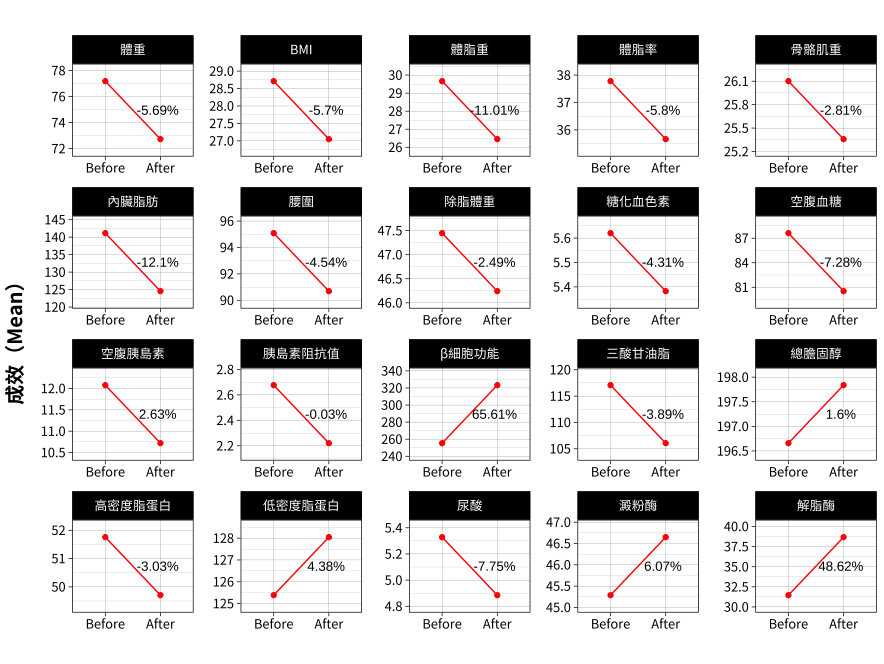

1.3 整體成效分析
控糖減重成效
根據美國糖尿病協會（ADA）於「糖尿病照護標準-2025」中的建議，適度的體重減輕（起始體重的3-7%）能改善血糖、血壓和血脂，降低進展為第二型糖尿病的風險；若能持續減重超過10%，通常會帶來更大的健康效益。
此外，美國心臟病學會 (ACC)/美國心臟協會 (AHA)/肥胖學會 (TOS) 的指南指出，所有過重或肥胖者應將在六個月內達成5-10%的體重減輕，作為一個現實且有臨床意義的目標。
美國內分泌醫學會（ACE）/美國臨床內分泌學家組織（AACE）的指南則建議，過重或肥胖者應在一個月內達成2.5%體重減輕，作為減重的目標。
資料來源：A Review of Current Guidelines for the Treatment of Obesity
分析結果：
診所客戶一次減重療程為期2個月，結合以上指南的建議，將5%的體重減輕定為目標是合理且具有臨床健康效益的。本次分析只納入具有前測和後測體重的客戶（N = 1808）。
- 體重下降比例的圖顯示：
在女性客戶中，有60%的人體重減輕≥5%，其中7.6%的人體重減輕>10%;；
在男性客戶中，有55.8%的人體重減輕≥5%，其中10.6%的人體重減輕>10%；
脂肪與肌肉在體重下降中的平均比例的圖顯示：
無論性別或體重減輕幅度，脂肪平均佔體重減少的60%以上，為主要的體重下降組成成分。
各組的平均體重、肌肉和脂肪變化這三個圖顯示：
肌肉和脂肪的變化和體重下降比例呈正比，也就是說體重下降越多，肌肉和脂肪下降越多。
脂肪與肌肉在體重下降中的平均比例圖只納入體重下降的人（N = 1315）
體組成與血液生化值的平均變化
下圖顯示療程前後的體組成和血液的平均變化，y軸表示前測或後測的平均值。
體組成相關的指標都呈現下降的趨勢，值得關注的是，體脂重和內臟脂肪分別下降了11.01%和12.1%。
血液生化值方面：
血糖相關的數值皆有改善，胰島素阻抗也有改善。
血脂相關的數值，三酸甘油脂呈現下降的趨勢，但是總膽固醇和低密度脂蛋白呈現上升的趨勢，且高密度脂蛋白呈現下降的趨勢。
澱粉酶和解脂酶皆呈現上升趨勢。
